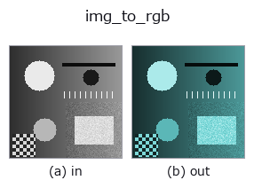

bridge op• Datenarten: image → rgbimage
• Aufruf: fullseye.apply(img, "img_to_rgb", a=0.5, b=0.5) (das 2-D-Modell ist ein Bild plus zwei skalare Regler a,b∈[0,1])

*Die Abbildung ist die tatsächliche Ausgabe auf einer synthetischen 128×128-Eingabe. Links Eingabe, rechts Ausgabe. Punktwolken als Draufsicht-Streudiagramm (Helligkeit = z), 1-D-Reihen als Linie, Volumen als Maximum-Projektion entlang z, Videos als mittleres Bild, komplexe Bilder als Betrag; Rückgabewerte, die kein Bild ergeben, werden als Werte gezeigt.*
Regler a durchfahren (0,1 / 0,5 / 0,9, der andere Regler auf Standard):
▸ img_to_rgb: Regler a durchfahren (Doku-Website)
Regler b durchfahren (0,1 / 0,5 / 0,9, der andere Regler auf Standard):
▸ img_to_rgb: Regler b durchfahren (Doku-Website)
Auf anderen Bildern (synthetische Szene / Foto / Münzen. Obere Reihe: Eingaben, untere Reihe: deren Ausgaben. Regler auf Standard):
▸ img_to_rgb: andere Eingaben (Doku-Website)
*Die 4. Spalte ist eine Farb-Eingabe (H,W,3). Dieser Op verarbeitet Farbe, ohne Kanäle zu vermischen (er faltet den Farbkanal nicht als dritte Raumachse).*
Gibt einem Graubild Farbton und Sättigung und erzeugt ein (H,W,3)-RGB-Bild (Sort rgbimage).
Aufgebaut in der Form des dichromatischen Reflexionsmodells (diffus = eingefärbt, spiegelnd = weiß):
mix = (1 - sat) + sat * chroma, chroma = HSV(hue, 1, 1), spec = clip((gray - 0.75) / 0.25, 0, 1) ** 2, rgb = gray * (mix * (1 - spec) + spec). Dunkle bis mittlere Pixel werden also mit dem Farbton eingefärbt, und je weiter ein Pixel die Helligkeit 0.75 übersteigt, desto mehr kehrt es zu Weiß (unbunt) zurück. Bei Sättigung 0 ergibt sich ein Grau mit 3 gleichen Kanälen (unabhängig von spec die Eingabe selbst). Jeder Kanal liegt höchstens bei der Eingabe, daher bleibt der Wertebereich in [0,1].
• a → Farbton hue = a (Rot bei 0, Grün bei 1/3, Blau bei 2/3, zurück zu Rot bei 1).
• b → Sättigung sat = b (bei b=0.5 nur zur Hälfte eingefärbt).
• Rückgabewert: (H, W, 3) float64.
• Das Knie des Spiegelanteils SPECULAR_KNEE = 0.75 ist fest (kein Stellknopf).
Warum ein Spiegelanteil (gemessen 2026-09-07): Bei einfacher Einfärbung gray * mix werden auch helle Teile zu einer gesättigten Farbe desselben Farbtons, und die "unbunten Glanzlichter", die tb_specular_coefficient_map / tb_specular_diffuse_split / tb_specular_free_transform betrachten, gab es auf nicht einmal 1 Pixel, sodass der Spiegelkoeffizient überall 0 und die Abbildung pechschwarz war. Die Eingabeseite der Synthese erfüllt die Annahme der Familie (dichromatisch).
Einsatz: tb_rgb_to_quaternion (→ qimage, der Eingang zu den Quaternionen-Farb-Ops), tb_specular_free_transform / tb_wetness / tb_sensor_capture. Es reproduziert nicht die Farben natürlicher Bilder (Synthese mit einem einzigen Farbton).
• Leitfaden zur Familie gallery2d_bridge
• Katalog der Beispieldaten (Download-URLs / Lizenzen) — 2-D nutzt skimage.data (BSD/Public Domain) plus synthetische Bilder, 3-D nennt Download-URLs echter Datenquellen (Stanford, PDS, …).
• Herkunft und Literatur der Operatoren — die Quellen der Forschung/Verfahren, auf denen diese Operatorfamilie beruht.
• Der kanonische Algorithmus (Autor, Jahr) und seine Anwendungen stehen im Familienleitfaden oben.
Das Programm unten ist nachweislich lauffähig (gleiche Eingabe wie die Abbildung). In der Studio-Hilfe wird dieser Block zu Schaltflächen, die es sofort laden und ausführen.
img_to_rgb 0.50 0.50
▸ Diese Pipeline laden · Laden & ausführen
• gallery2d_bridge — py -3.11 examples/gallery2d_bridge.py
rgbimage als Eingabe)identity · tb_wetness · tb_sensor_capture · tb_specular_diffuse_split · tb_specular_coefficient_map · tb_specular_free_transform · tb_rgb_to_quaternion
bridge)img_to_points · img_to_keypoints · img_to_signal · img_to_projection_profile · img_to_counts · img_to_matrix · img_to_video · img_to_volume
*Provenance: ops.py — 2D Operator-Registry. Diese Notiz wird von tools/opdocs.py md erzeugt (nicht von Hand bearbeiten).*
© 2026 Kazufumi Furuse — Fullseye operator documentation. Licensed under Apache-2.0.